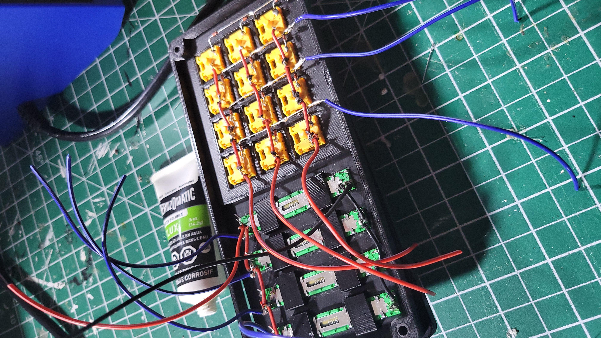

Development began with identifying user requirements: 12 buttons, 4 faders, and compatibility with popular streaming software via MIDI. From there:
- Enclosure Design: 3D models were provided by the original creator MattRigg on Printables. The models provided a sturdy chassis to house an Arduino Pro Micro, faders, and switches. Iterated on mounting points for easy assembly.
- Layout: 3×4 grid of tactile buttons for scene control; four inline faders on the side for precise audio adjustments.
- Electronics: Mapped wiring enabled button array scanning to use fewer pins; faders connected to analog inputs. Added diodes for debouncing.
- Firmware: Chosen QMK/Deej for MIDI support. Developed a custom keymap assigning each button a unique MIDI CC or Note.
Challenges & Solutions:
- Button Debounce: Initial tests showed multiple triggers. Added hardware diodes and enabled software debouncing.
- Analog Noise: Fader readings fluctuated. Added RC filters and implemented a moving average in code.